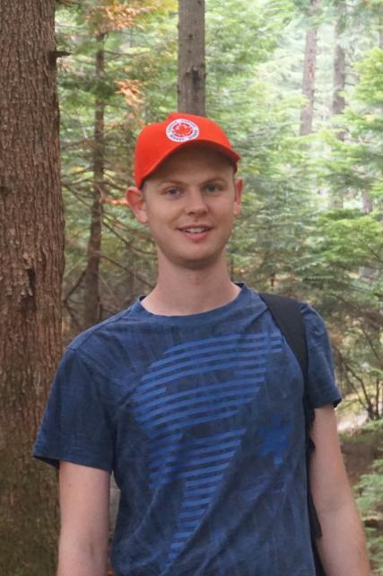

2024 The 9th Workshop on Noisy and User-generated Text (W-NUT)
March 22, 2024 — collocated with EACL 2024.
The WNUT workshop focuses on core NLP tasks (e.g., POS/NER tagging and translation; not computational social science) over user-generated text, such as that found on social media, web forums, online reviews, digital health records, or language learner essays.
We will have a best short and a best long paper award.
Invited Speakers
 |
|
| Su Lin Blodgett Microsoft Research Montréa |
Jennifer Foster Dublin City University |
Important Dates
- Submission Deadline: December 18, 2023 (anytime on earth; dual-submission allowed)
- Final ARR Submission Date: October 15th, 2023
- ARR Commitment Date: January 18th, 2024
- Acceptance Notification: January 20, 2024
- Camera-Ready Deadline: January 30, 2024
- Workshop Day: March 22, 2024
Call for Papers
We seek submissions of long and short papers on
original and unpublished work (same page limit as the EACL 2024 main conference). All accepted submissions will be presented as talks and/or posters at the workshop, following the EACL 2024 main conference.
Topics of interest include but are not limited to:
- NLP of noisy text, e.g. POS, NER tagging, Parsing
- Text normalization and error correction
- Paraphrase identification and semantic similarity of short text or noisy text
- Extracting user demographics, profiles, and major life events
- Machine translation and Multilingual NLP over noisy text
- Information extraction from noisy text, global and regional trend detection, and event extraction
- Colloquial language, e.g. idiom detection
- Domain adaptation to user-generated text
- Detecting rumors, contradictory information, sarcasm and humor on social media
- Sentiment analysis
- Temporal aspects of user-generated content (resolving time expressions, concept drift, etc...)
- Representing and mining language variation in user-generated content
- Processing of automatically generated data
Submissions should conform to the ACL style guidelines. Long and short paper submissions must be anonymized. Please submit your papers via OpenReview. Or commit them via ARR.
Double Submission Policy: Papers that have been or will be submitted to other meetings or publications must indicate at submission time. Authors of a paper accepted for presentation must notify the workshop organizers by the camera-ready deadline as to whether the paper will be presented or withdrawn.
If you would like to present your EACL findings paper at WNUT, please fill out the following form
Workshop Organizers
|  |  |
 |
 |
 |
|
| Rob van der Goot Associate Professor IT University of Copenhagen |
Max Müller-Eberstein PhD IT University of Copenhagen |
JinYeong Bak Assistant Professor SungKyunKwan University |
Wei Xu Associate Professor Georgia Institute of Technology |
Alan Ritter Associate Professor Georgia Institute of Technology |
Tim
Baldwin Professor MBZUAI and University of Melbourne |
Contact
robv@itu.dkProgram Committee
- Diana Inkpen (University of Ottawa)
- Yuval Pinter (Ben-Gurion University of the Negev)
- Wei Gao (Singapore Management University)
- Ayah Zirikly (Johns Hopkins University)
- Maria Antoniak (Allen Institute for Artificial Intelligence)
- Richard Sproat (Google)
- Dianna Radpour (University of Colorado at Boulder)
- Yogarshi Vyas (Amazon)
- A. Seza Doğruöz (Ghent University)
- Naoki Otani (Megagon Labs)
- Aron Culotta (Tulane University)
- Shi Zong (University of Waterloo)
- Mika Hämäläinen (Rootroo Ltd)
- Eduard Dragut (Temple University)
- Mirco Schönfeld (Universität Bayreuth)
- Sweta Agrawal (University of Maryland, College Park)
- Maximilian Mozes (Cohere)
- Roman Yangarber (University of Helsinki)
- Kwan Hui Lim (Singapore University of Technology and Design)
- Lucy H. Lin (Spotify)
- Yansong Feng (Peking University)
- Yoshinari Fujinuma (AWS AI Labs)
- Nikola Ljubešić (Jožef Stefan Institute)
- Dan Simonson (BlackBoiler, Inc.)
- Dan Goldwasser (Purdue University)
- Marina Danilevsky (International Business Machines)
- Hamdy Mubarak (Qatar Computing Research Institute)
- Shubhashis Roy Dipta (University of Maryland, Baltimore County)
- Micha Elsner (Ohio State University)
- Yasuhide Miura (FUJIFILM)
- Xingyi Song (University of Sheffield)
- Monojit Choudhury (Mohamed bin Zayed University of Artificial Intelligence)
- Maria Nadejde (Amazon)
- Kevin Small (Amazon)
- Chao Jiang (Georgia Institute of Technology)
- Kokil Jaidka (National University of Singapore)
- Joel R. Tetreault (Dataminr)
- Jennifer Foster (Dublin City University)
- Manuel Montes (Centro de Investigación en Computación, IPN, Mexico)
- Soroush Vosoughi (Dartmouth College)
- Reno Kriz (Johns Hopkins University)
- Anna Wegmann (Utrecht University)
- Mike Zhang (IT University of Copenhagen)
- Sai P Vallurupalli (University of Maryland, Baltimore County)
- Eduardo Blanco (University of Arizona)
- Jeniya Tabassum (Amazon)
- Paolo Rosso (Universitat Politècnica de València)
- Xiaojun Wan (Peking University)
- Abhinav Singh (Bloomberg)
- Vinodkumar Prabhakaran (Google)
- Dhivya Chinnappa (Thomson Reuters)
- Hamid Beigy (Sharif University of Technology)
- Alice Oh (Korea Advanced Institute of Science and Technology)
- Zeerak Talat (Mohamed bin Zayed University of Artificial Intelligence)
- Daniel Varab (Novo Nordisk, IT University of Copenhagen)
- Gabriel Stanovsky (Hebrew University of Jerusalem)
- Fajri Koto (Mohamed bin Zayed University of Artificial Intelligence)
- Ori Shapira (Amazon)
- Biaoyan Fang (CSIRO)
- Marcos Zampieri (George Mason University)
- Paul Cook (University of New Brunswick)
- Christine de Kock (University of Melbourne)
- Vicky Zayats (Google)
- Guangzeng Han (University of Memphis)
- Tanmay Parekh (University of California, Los Angeles)
- Lisheng Fu (New York University)
- Danae Sanchez Villegas (University of Sheffield)
- JinYeong Bak (Sungkyunkwan University)
- patrick.littell@cnrc-nrc.gc.ca
- Günter Neumann (German Research Center for AI)
- Jing Jiang (Singapore Management University)
- Kristen Johnson (Michigan State University)
- Cagri Coltekin (University of Tuebingen)
- Emily Allaway (Columbia University)
- Anthony Rios (University of Texas at San Antonio)
- Chiyu Zhang (University of British Columbia)
- Peter Makarov (Amazon)
- Ishan Jindal (IBM Research)
- Sihao Chen (, University of Pennsylvania)
- Alla Rozovskaya (City University of New York)
- Rahmad Mahendra (Royal Melbourne Institute of Technology)
- Sara Tonelli (Fondazione Bruno Kessler)
- Vincent Ng (University of Texas at Dallas)
- Vasileios Lampos (University College London, University of London)
- Alexander Fabbri (SalesForce.com)
- Vivek Kulkarni (Grammarly)
- Andreas Spitz (Universität Konstanz)
- Zhiyang Teng (Nanyang Technological University)
- Yitong Li (Huawei Technologies Co., Ltd.)
- Sai P Vallurupalli (University of Maryland, Baltimore County)
ACL Anti-harassment Policy